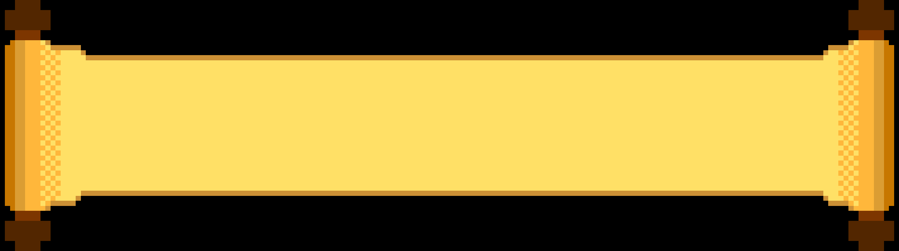

Ο Δία, βλέποντας τις δύο πιατέλες, από την πρώτη στιγμή ήταν αποφασισμένος να διαλέξει την δεύτερη καθώς θεώρησε ήδη δύσκολη την κατάσταση στην οποία βρίσκονταν τόσο ξαφνικά
οι άνθρωποι και ήθελε να τους βοηθήσει κατά βάθος. Όταν συνειδητοποίησε ότι η δεύτερη πιατέλα ήταν η καλύτερη άρχισε να έχει δεύτερες σκέψεις για την συμπεριφορά του απέναντι τους.
Εξοργισμένος που προσπάθησαν να τον ξεγελάσουν, θέλησε να τους τιμωρήσει.